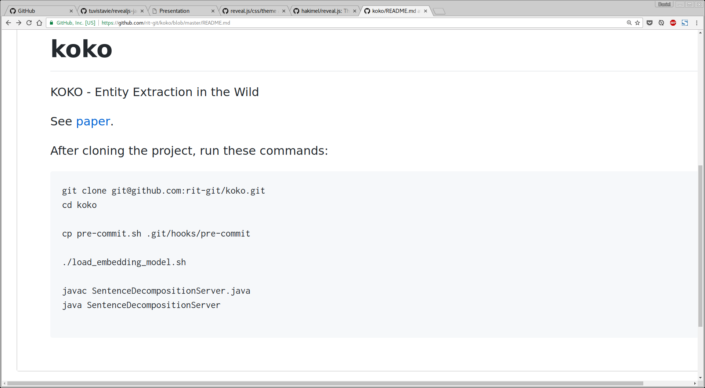
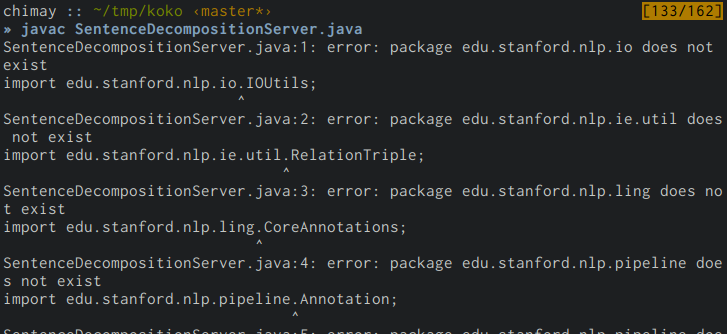

Introduction to
Continuous Integration
Daniel Perez @ RIT
Continuous integration
- Why?
- What?
- When?
- How?
Main goal
centralized and iterative check for correctness
- avoid bugs in the code base
- make setups reproducible
It works on my computer
It works on my computer
It works on my computer
- Locally installed software
- System level dependency
e.g. Particular version ofMySQL - OS dependent features
e.g.epollfor IO events - Platform dependent features
e.g.SIMDinstructions
What is Continuous Integration?
Check the software everytime the code is changed
- Run test suites
- Run static code analysis tools
- Deploy the code (continuous deployment)
 Carnegie Mellon University blog
Carnegie Mellon University blogWhen should I use CI?
- Deploying code to actual users
- Writing library code used by other people
- Working with other people on the same code
- Working on the same code for more than a few weeks
How to use CI?
Short intro to Circle CI
- How to setup a project
- How to configure the CI server
- How to deploy your code automatically